현장 측량 데이터 연동까지 한 번에
3D 모델을 현장 장비 제어 파일로 변환하고,
현장 측점(CSV/TFLX)을 연동해 오차 없는 토공 설계를 완성하세요.

SketchUp Pro
3D모델링 · 2D문서화 ·
클라우드 스토리지

Trimble Site
Contractor
토공 · 굴착 설계 연동
Trimble Field
Points
현장 측량 좌표 제어
 Pro Civil Contractor
Pro Civil Contractor
이런 고민이 있다면, 지금 구매하세요!
굴착기 제어 파일 제작이
번거로워요
토목 설계자 · 현장 시공팀
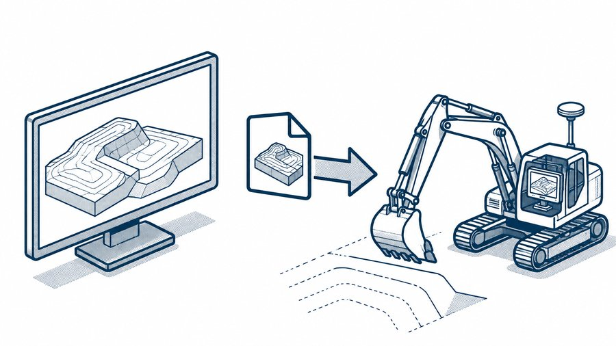
Siteworks 호환 파일
(.dxf/.ttm) 내보내기
현장 좌표를 3D 도면에
일일이 맞춰야 해요
현장 측량기사 · 토탈스테이션 담당자
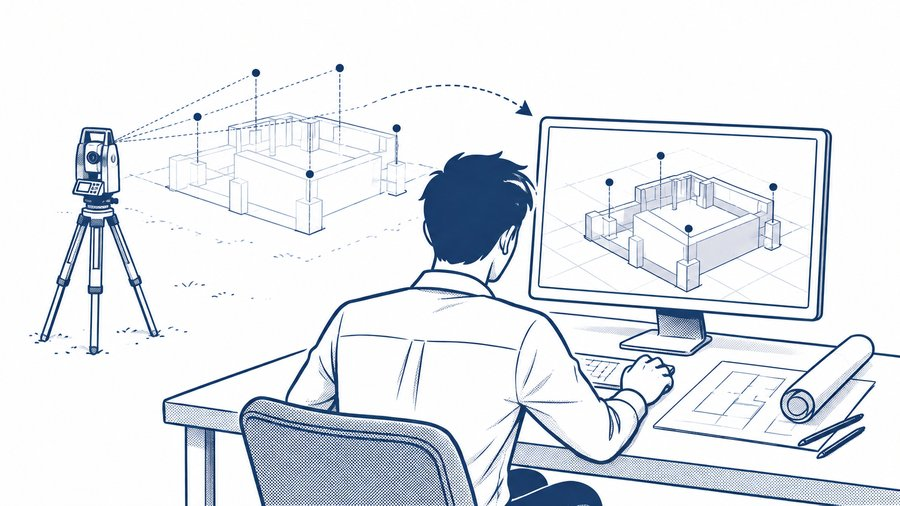
현장 측점 위에서
바로 3D 모델링 시작
측량 좌표를 원점 기준으로
가져오기 어려워요
스캐너를 쓰는 측량 · 엔지니어링 팀
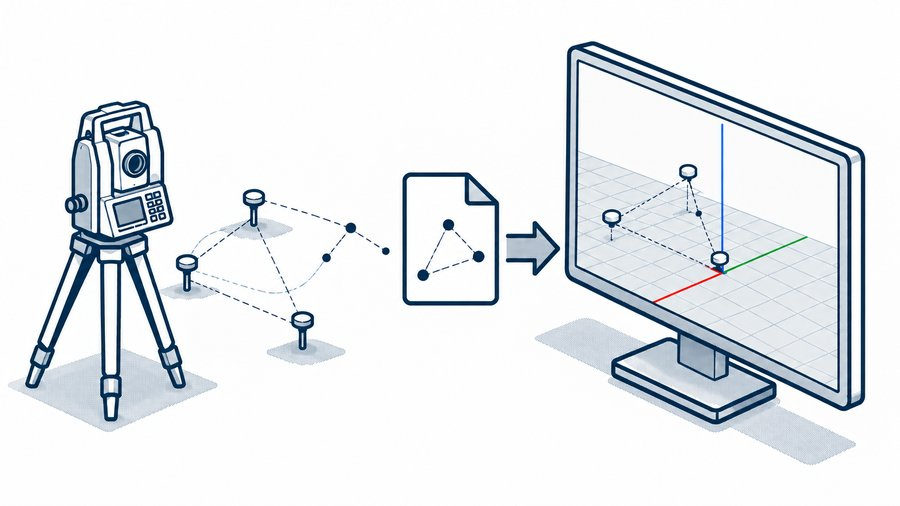
RTS 측점을 스케치업
원점 기준으로 가져오기
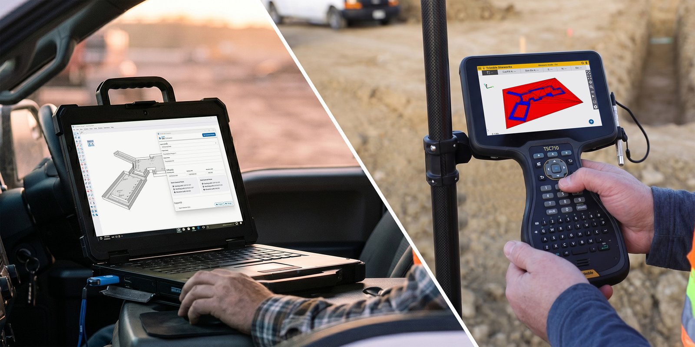
3D-to-Field 굴착 및 토공 솔루션
Trimble Site Contractor
스케치업 3D 모델, 측량 장비·굴착기와 연동
굴착 지오메트리를 손쉽게 모델링하고,
현장 컨트롤러 및 장비 제어 파일(.dxf, .ttm)로 내보냅니다.
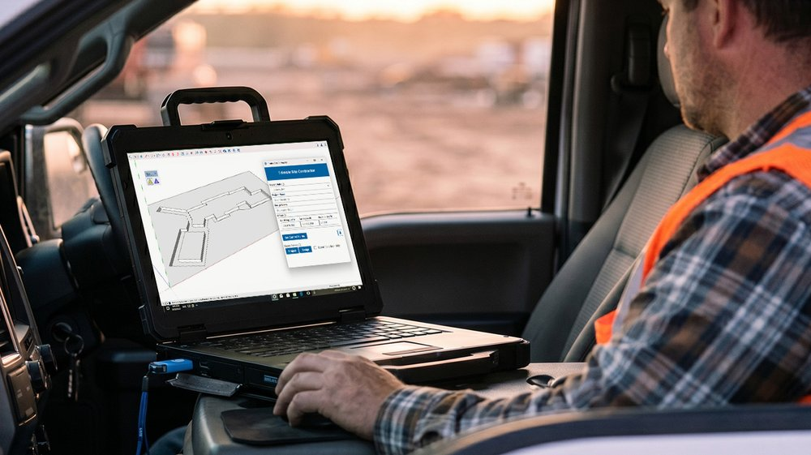
지형 모델 내보내기
스케치업 지형을 Siteworks 태블릿이 읽을 수 있는 파일로 변환합니다.
굴착 장비 연동
굴착 장비 모니터로 설계 도면과 정밀 굴착 높이를 실시간 제공합니다.
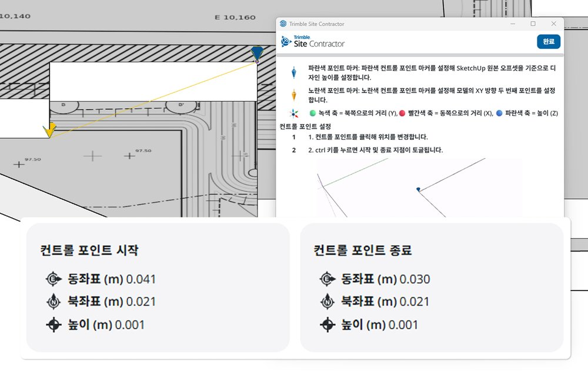
컨트롤 포인트 좌표 맞춤
오프셋 입력과 마커 지정으로 스케치업 원점과 실제 현장 좌표를 매칭합니다.
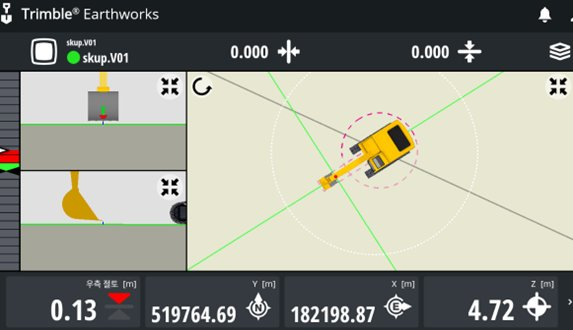
현장 측량 지형 가져오기
현장에서 측량한 데이터를 가져와 지형에 맞춰 설계를 즉시 검토·수정합니다.
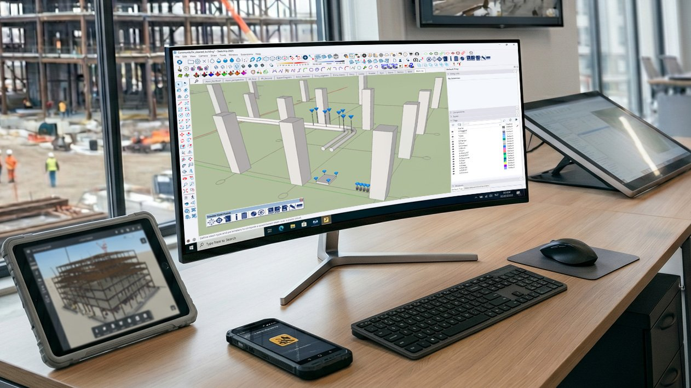
현장 좌표-3D 도면 정밀 연결 도구
Trimble Field Points
현장 측점 데이터(RTS)와 스케치업 포인트를
오차 없이 상호 호환
큰 측량 좌표를 스케치업 모델 원점 근처로 옮기고,
모델의 레이아웃 포인트를 현장 배치 파일로 내보냅니다.
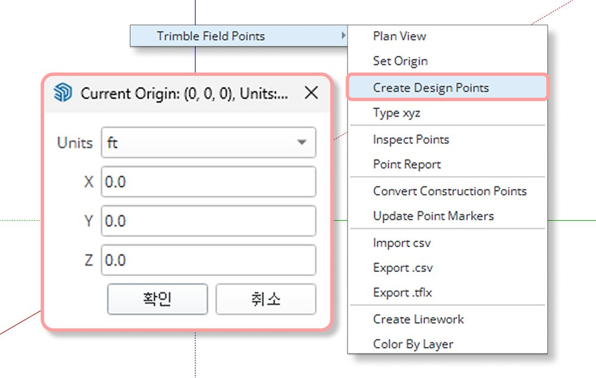
원점 오프셋 설정
현장 좌표를 모델 원점 근처로 옮겨 작업하고, 원래 좌표로 되돌린 후 내보냅니다.
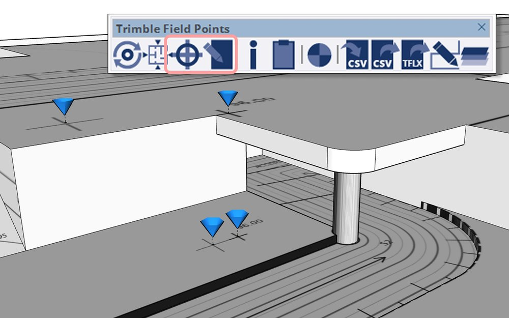
설계 포인트 생성 및 변환
클릭, 좌표 직접 입력, 줄자 안내점 변환으로 설계 포인트를 만들어 모델에 배치합니다.
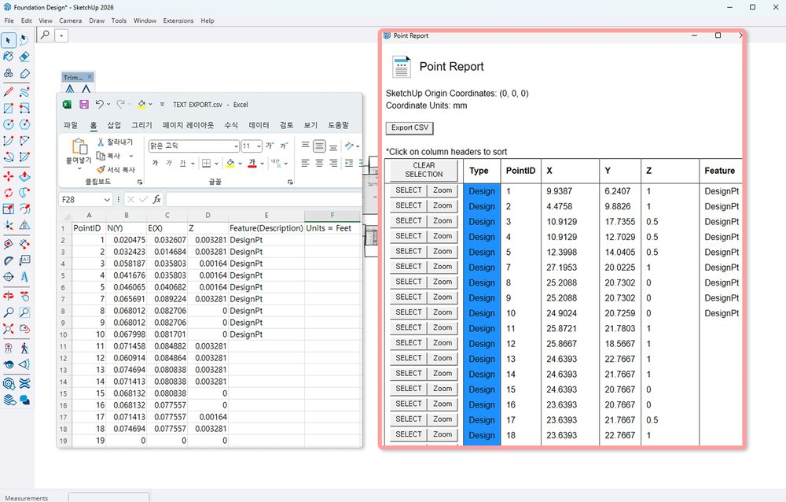
TFLX / CSV 내보내기
작성한 포인트를 Field Link용 .tflx 파일 및 범용 CSV로 내보내 현장 배치에 활용합니다.
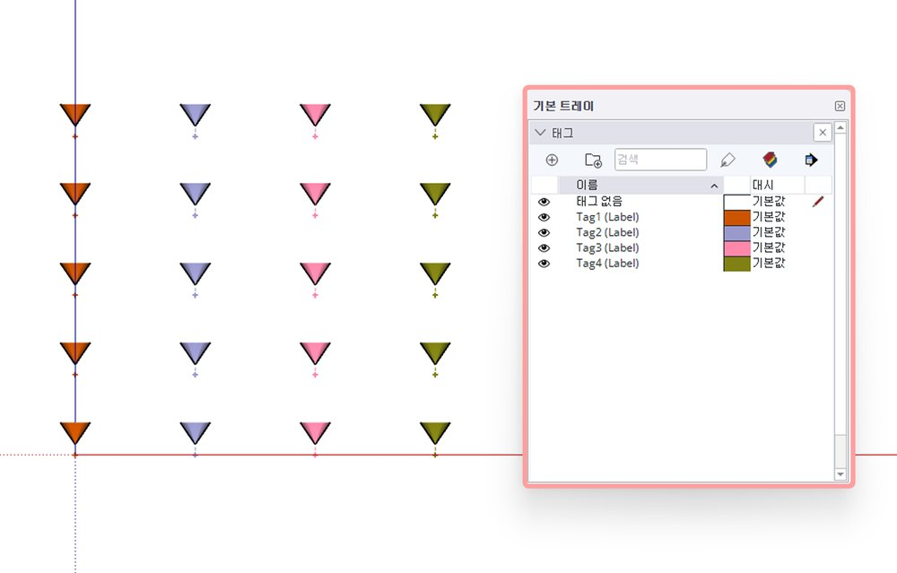
레이어별 색상 표시
포인트를 스케치업 태그별 색상으로 구분해 표시하고, 모델에서 종류별로 확인합니다.
이 제품에는 SketchUp Pro가 포함되어 있습니다.
3D모델링 · 2D문서화 · 클라우드 스토리지
스케치업 프로 시빌 컨트랙터 포함 제품
Trimble Site Contractor
굴착 설계 및 현장 제어 파일 변환
Trimble Field Points
RTS 측점 연동·포인트 제어
Desktop용 스케치업
확장 가능한 3D 모델러

Web용 스케치업
설치 없이 웹에서 모델링

iPad용 스케치업
3D 모델링 전용 도구
LayOut
도면 · 프레젠테이션 문서
SketchUp Viewer
ios 전용 모바일 뷰어

3D Warehouse
무료 3D 모델 라이브러리

Extension Warehouse
분야별 기능 확장
Trimble Connect
클라우드 저장 · 협업
PreDesign
설계 전 대지 · 기후 분석
플랜별 제품 비교
| 기능 | Free무료 · 웹 전용 | Pro기본 구성 | Pro Scan스캐닝 전문가용 | Pro Civil Contractor건설 / 토목 전문가용 | Pro AdvancedAEC 전문가용 | Studio올인원 패키지 |
|---|---|---|---|---|---|---|
웹용 스케치업SketchUp for Web | ||||||
데스크톱용 스케치업SketchUp for Desktop | ||||||
아이패드용 스케치업SketchUp for iPad | ||||||
3D 모델 저장 창고3D Warehouse | ||||||
스케치업 기능 확장Extension Warehouse | ||||||
클라우드 스토리지Trimble Connect | 10GB | 무제한 | 무제한 | 무제한 | 무제한 | 무제한 |
현장 좌표 관리Field Points for SketchUp Win Only | ||||||
굴착 설계 연동Site Contractor Win Only | ||||||
포인트 클라우드 모델링Scan Essentials Win Only | ||||||
Revit 파일 지원(*.rvt)Revit Importer Win Only | ||||||
고품질 렌더링V-Ray Win Only |
Field Points , Site Contractor , Scan Essentials , Revit Importer , V-Ray 기능은 Windows OS 환경에서만 사용할 수 있습니다.
지원 파일 포맷
가져오기 (Import)
*.3ds, *.dwg, *.dxf, *.dae, *.dem, *.ddf, *.kmz, *.ifc, *.ifcZIP, *.jpg, *.jpeg, *.pdf, *.psd, *.png, *.stl, *.skp, *.skm, *.ske, *.skh, *.style, *.tif, *.tiff, *.tga, *.trb, *.usd, *.usda, *.usdc, *.usdz, *.bmp, *.glb
내보내기 (Export)
2D*.pdf, *.eps, *.bmp, *.jpg, *.tif, *.png, *.dwg, *.dxf
3D*.3ds, *.dwg, *.dxf, *.dae, *.fbx, *.kmz, *.ifc, *.trb, *.obj, *.stl, *.usd, *.usda, *.usdc, *.usdz, *.wrl, *.xsi, *.glb
시스템 요구 사항
운영체제
Windows 11 · macOS 15(Sequoia) 이상
CPU
2GHz 이상 (Win OS) · 2.1GHz 이상 (Mac OS)
RAM
8GB 이상 (Win · Mac 동일)
디스크 공간
6GB 이상 (Win · Mac 동일)
그래픽
VRAM 8GB 이상 최신 GPU (OpenGL 3.1 이상)
(PBR 등 고성능 작업 시 32GB 이상 권장)
필수 소프트웨어
Win OS: .NET Framework 4.6.2 이상
Mac OS: QuickTime 5.0 이상
지원 언어
한국어 지원 (다국어 포함)
32비트 Windows에는 설치할 수 없습니다.
Boot Camp, VMWare, Parallels 등 가상화 환경을 지원하지 않습니다.
공통 안내사항
- 라이선스 발급 순서결제 완료 후 트림블 본사의 승인을 거쳐 라이선스가 발급됩니다. 승인이 완료되면 결제 시 입력하신 이메일로 안내 메일이 발송됩니다. 메일 수신 후 빌딩포인트코리아에서 발송한 활성화 가이드에 따라, 라이선스 활성화 및 계정 할당을 진행해 주세요.
- 라이선스 유지보수모든 스케치업 라이선스는 발급일로부터 1년 간의 기술지원 서비스 비용이 포함되어 있습니다. 빌딩포인트코리아 기술지원팀 support@buildingpoint.co.kr
주문 및 라이선스 정책
- 환불 조건라이선스 발급일 기준 7일 이내 라이선스를 활성화하지 않은 경우 환불이 가능합니다.
- 반품 / 환불 예외 사항소프트웨어 상의 문제를 제외한 기타 다른 이유로 인한 반품/환불 불가
- 결제 관련카드결제 취소의 경우 카드사 또는 PG사 사정에 따라 취소 완료까지 최대 15일까지 소요될 수 있습니다. 가상계좌 입금 후 취소의 경우 당사와 PG사 환불 규정에 의해 15일 이내 환불됩니다. 취소 시 발생하는 모든 수수료(카드취소, 입금 후 취소)는 고객 부답입니다.
라이선스 발급 안내
본 상품은 라이선스가 발급되는 상품으로, 라이선스 발급에 영업일 기준 평균 1~2일 소요됩니다.